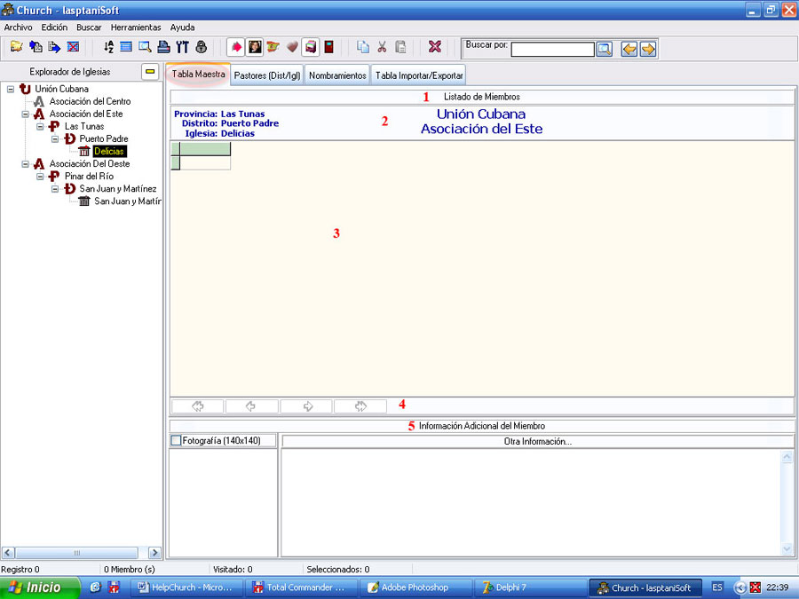

La Tabla Maestra

Figura 9. La pestaña Tabla Maestra.
La Tabla Maestra es la pestaña o ventana que por defecto estará activa inmediatamente que el programa abra. Esta es la ventana que más utilizará usted, es donde añadirá los miembros de cada iglesia y en la cual aparecerán reflejadas las búsquedas más regulares.
Nota: Aunque usamos el nombre de Tabla Maestra para referirnos a ella en realidad refleja la estructura de la base de datos.
La ventana cuenta con:
1. El panel de título (1), donde podrá introducir el título que llevará su informe una vez que lo desee imprimir, solo con un clic sobre este panel se activa un editor donde usted puede cambiar el título, cuando lo halla editado pulse Enter o simplemente abandone el panel para que los cambios tengan efecto. Cuando oprima la tecla escape se añadirá el título que estaba anteriormente.
2. El panel informativo (2), es el lugar donde aparece cada dependencia señalada en el Explorador de Iglesias, para la iglesia activa en el caso de la figura 9, pero esta información cambiará en dependencia de las búsquedas que valla realizando.
3. La Tabla Maestra como tal (3), es la rejilla de datos visible de su base de datos, donde usted añadirá, cambiará y eliminará datos o registros de toda su base de datos, en dependencia del estado del Candado y del tipo de consulta o búsqueda.
4. El Navegador (4), como su nombre lo indica, es el que le proporciona la posibilidad de navegar por la rejilla de datos, además de otras opciones como añadir, eliminar, etc., opciones que dependerán también del estado de la Tabla Maestra (Edición o no Edición, ver Candado). Cada botón del navegador refleja un mensaje cuando el mouse apunta a él, indicando su función.
5. El Panel de Información Adicional (5).Constituido por varios paneles donde se proporcionará o desde donde se obtendrá información adicional de cada miembro: Foto, Idiomas, Enfermedades, Otra Información y Visitas, todas con relación al miembro seleccionado en la rejilla de datos.